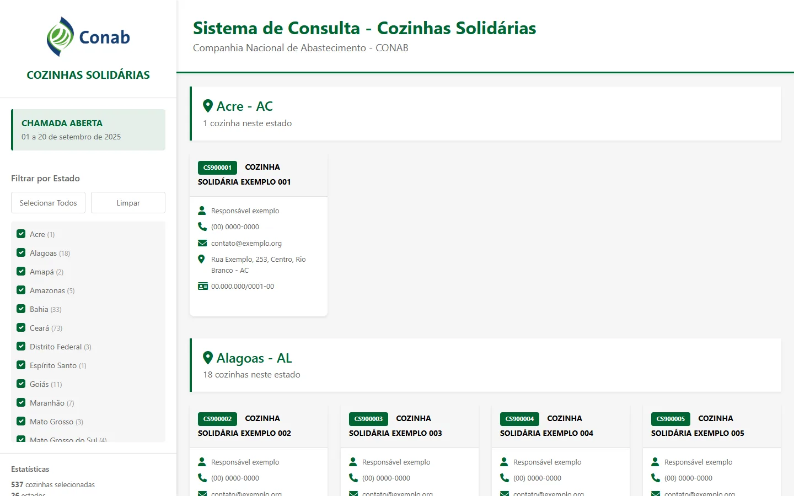
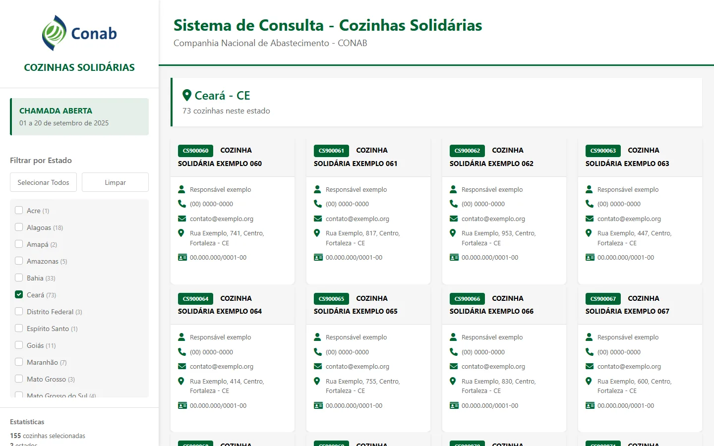

Cozinhas Solidárias
Consolidação das planilhas estaduais do levantamento das Cozinhas Solidárias 2025 com a base do Ministério do Desenvolvimento e Assistência Social, para a Conab.
- Instituição
- Conab
- Programa
- Cozinhas Solidárias 2025
- Entradas
- 26 planilhas estaduais
- Saída
- Painel, Word e PDF
537cozinhas consolidadas
26estados com respostas
6.309cozinhas na base federal
89,9%das respostas casadas (537 de 597)
Telas
Tela reproduzida a partir do painel gerado, com nomes, contatos e CNPJs trocados. Dados fictícios.




Fluxo do processo
Entradas
26 planilhas estaduaisrespostas do levantamento 2025
Base federal6.309 cozinhas cadastradas
Leitura
Colunas-chavecódigo, município e responsável achados pelo nome da coluna
Correspondência
Códigoigual, sem acento e sem caixa
Municípioparecido, 80% ou mais
Saídas
Tabela única537 cozinhas em Excel
Relatóriolinhas casadas e não casadas
Painel HTMLconsulta por estado
Word e PDFlista com capa e índice
Regra de correspondência
Cozinhas por estado
Os 10 estados com mais cozinhas casadas
Os outros 16 estados somam 94 cozinhas.
Funcionalidades
- PainelArquivo HTML único. Filtro por estado com contagem e ficha de cada cozinha com contato e CNPJ.
- DocumentosWord e PDF com capa, índice por estado e uma ficha por cozinha.
- RelatórioTexto com as colunas achadas, a taxa de correspondência e os códigos sem par em cada estado.
Tecnologias
Pythonpandasdifflibpython-docxReportLab